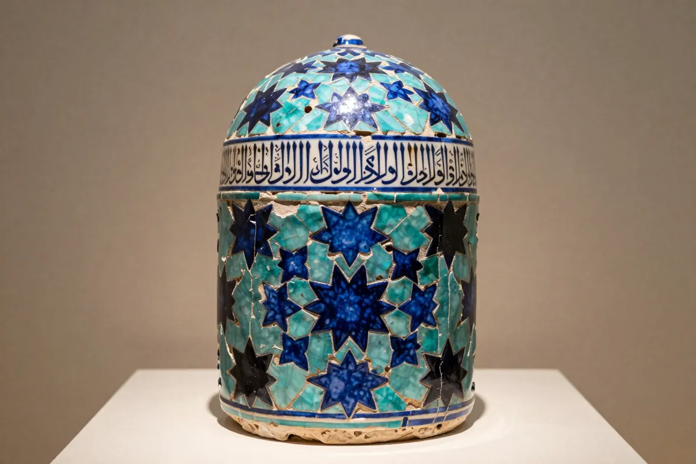

Vegg- og kuppelkledning som seljukiske og timuridiske pottemakere laget av glaserte fliser i én farge. De skar hver flis i små former og satte bitene sammen til et geometrisk eller kalligrafisk mønster.

Kjerneidé
En byggeflate blir et vevd mønster av lys og farge når mange små fliser i turkis, kobolt og sort skjæres til én geometrisk plan.
Designprinsipper
Glasér hver enkel flis i én farge: turkis av kobber, blått av kobolt, sort av mangan og jern.
Skjær den brente flisen med en meisel til formene i ett mønster: stjerner, drager, ruter og kalligrafiske streker.
Tegn hele mønsteret først, legg så de skårne bitene med forsiden ned på det og hell gips over baksiden.
Bygg mønsteret på et rutenett med 6, 8 eller 12 punkter, slik at formene gjentas uten gap.
Bruk kufisk skrift som et bånd på 30 til 60 cm, i hvitt eller blått på mørk bunn.
Hold bitene 1 til 2 cm tykke, med fuger under 2 mm, slik at flaten leses som én hud.
Plasser mosaikken der folk ser: mihraben, portalen og kuppelen.
Legg til noen få lyster- eller relieffliser i en flat mosaikk for å skifte lyset.
Antimønstre
Et malt mønster på en flat flis, uten skårne fuger
Figurer av mennesker og dyr i mosaikkfeltet
Tykke fugelinjer som bryter mønsteret opp i ruter
Sterke moderne farger som rosa, limegrønn eller oransje
En enkelt gjentatt flis som gir et tapetmønster uten skårne former